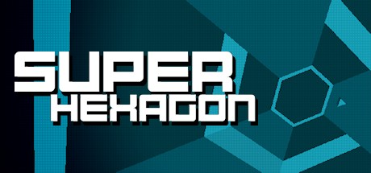
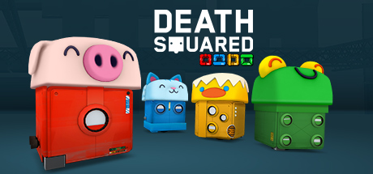

Super Hexagon
iOS & Android development
The iOS openFrameworks port and Android modernisation: performance, responsive input, high refresh rate displays and controller support.
I’m Dan, a game programmer and build engineer. I work where games, native code and cross-platform systems meet.
Game programming / Build & toolchain engineering / Open source
01 / SELECTED GAMES
From a tiny triangle to a sentient vacuum cleaner. A selection of the worlds I’ve helped bring to players.

iOS & Android development
The iOS openFrameworks port and Android modernisation: performance, responsive input, high refresh rate displays and controller support.
Senior Game Programmer
A narrative adventure about a small robot, an increasingly mysterious smart home, and the journey towards sentience.

Game development
Cooperative puzzle solving, colourful robots, and the occasional accidental demise. Part of my game development work with SMG Studio.
02 / OPEN SOURCE
Libraries, build systems and creative tools. The work that helps other people make things, too.
Image library maintenance, platform fixes and builds.
Prebuilt libraries and build scripts, starting with iOS.
Contributions to the cross-platform C++ toolkit for creative coding.
A ray-tracing framework built around Ray Tracing from the Ground Up.
Local log analysis for builds, CI, IDEs and crashes.
Connecting openFrameworks applications with the Godot editor.
03 / PUBLISHED RESEARCH
Co-authored research at UTS Games Studio, exploring facial expression recognition, crowdsourced data and games with a purpose.
BeFaced used a tablet’s camera to track players mimicking facial expressions during a tile-matching game. Capturing and labelling those expressions was designed to help build varied training data for facial expression recognition systems.
Research background ↗2014 / CHI EXTENDED ABSTRACTS
A game interface for crowdsourcing facial expression data using real-time tracking and dynamic difficulty.
2013 / SIGGRAPH ASIA TECHNICAL BRIEFS
Using familiar gameplay to capture and automatically label facial expressions for machine learning research.
2014 / CHI EXTENDED ABSTRACTS
Facial expression recognition and feedback in a portable game for children’s emotional development.
2014 / CHI EXTENDED ABSTRACTS
2014 / FOUNDATIONS OF DIGITAL GAMES
2014 / FOUNDATIONS OF DIGITAL GAMES
2013 / SIGGRAPH ASIA MOBILE GRAPHICS & INTERACTIVE APPLICATIONS
2013 / SIGGRAPH ASIA MOBILE GRAPHICS & INTERACTIVE APPLICATIONS
2012 / WORKSHOP AT SIGGRAPH ASIA
2012 / INTERACTIVE ENTERTAINMENT
04 / EARLIER EXPLORATIONS
Interactive experiences and research at the intersection of code and people.
Facial expression games and research into emotional development, human-computer interaction and affective computing.
Papers & research citations ↑iPhone game programming with openFrameworks and Bullet physics, including game states, menus, leaderboards and the web server.
Project background ↗Interactive development for the First World War Galleries redevelopment, as part of the wider multimedia team.
Exhibition & credits ↗05 / THE PERSON BEHIND THE CODE
Also known as danoli3.
Based in Sydney. Building across platforms.
My work spans game programming, systems, build engineering and developer tools. I’m interested in the details that connect a creative idea to something people can actually play.
I’ve worked with Robot House, SMG Studio and UTS Games Studio, and contribute to open-source projects including openFrameworks.
06 / KEEP IN TOUCH